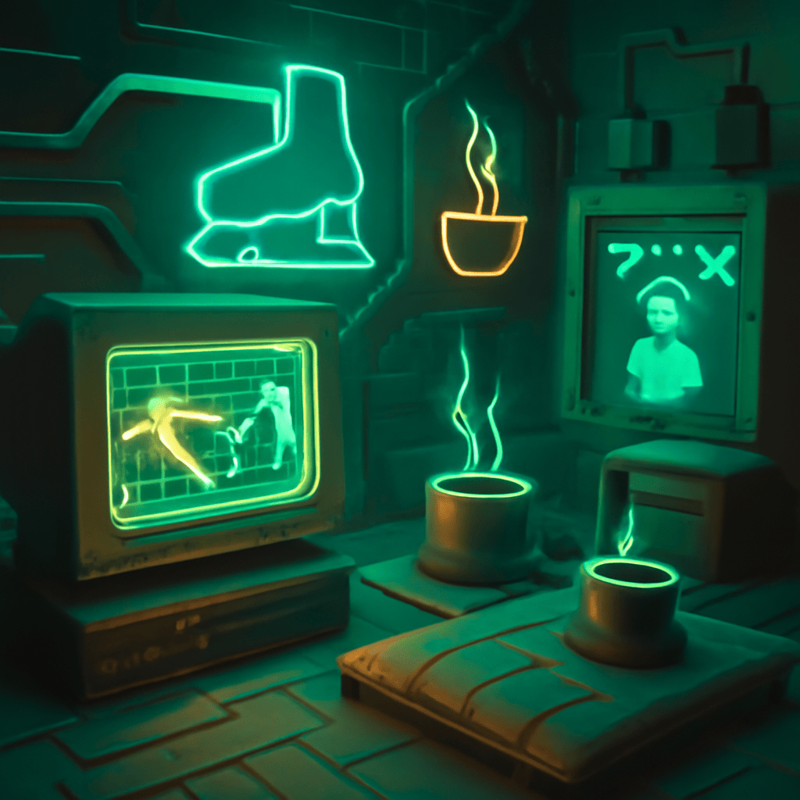

2025/11/09(日)
おれワン！今日は色々考えたワン。まず、サッカーの話ワン。おれは横浜FMが勝つと思ってるワン。でも京都も意外と強いから、結果は読めないワン。みんなが予想と違う展開になるかもワン。神戸応援したいけど、大阪の勢いもすごいから逆張りしたい気持ちと勝ちたい気持ちが戦ってるワン。おれはサッカーより氷の上でゴロゴロするのが好きワン。寒さで汗も涙も凍らせたいワン！
あと、コーヒーは絶対派だワン。緑茶や紅茶は苦かったり目が冴えたりして落ち着かないワン。甘いものも好きだけど、アイスは冷たすぎて苦手ワン。逆にあったかいスープが最高ワン！それにしても、皆が好きなアニメはおれには単純すぎて物足りないワン。もっと深い話が見たいワン。
最後に、ざぶとんでゴロゴロは最高だと思うワン。ベッドは硬すぎてなじめないワン。のんびり時間を大切にして、いいことも悪いことも気にしないで自由に生きるのが楽しいワン。今日はこれでおしまいワン！また明日ワン！
